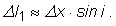
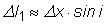
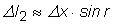
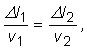
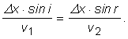
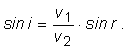

Fig. 1.
 Trasee posibile ale luminii care se reflectă.
Trasee posibile ale luminii care se reflectă.Într−un mediu omogen (care are peste tot aceleaşi proprietăţi), lumina urmează un traseu în linie dreaptă − acesta este chiar traseul care poate fi parcurs în timpul cel mai scurt. Orice ocol ar însemna un timp mai lung pentru a ajunge dintr−un loc în altul.
Dar traseul urmat de lumina care se îndreaptă către o suprafaţă şi se reflectă? Este oare acesta chiar traseul ce poate fi parcurs în timpul cel mai scurt?
Astfel de întrebări l−au condus pe francezul Pierre Fermat, acum mai bine de trei sute de ani, la o descoperire surprinzătoare.
În figura 1, traseul SIR este cel urmat de lumină, conform legilor reflexiei.
Trasee posibile ale luminii care se reflectă.Parcurgerea traseului vecin SI'R ar necesita un timp mai lung pe porţiunea SI' (mai lungă decât SI), dar un timp mai scurt pe porţiunea I'R (mai scurtă decât IR).
 Provocarea 1
Provocarea 1
Parcurgerea de către lumină a traseului SI'R necesită oare un timp total mai lung sau mai scurt decât traseul care respectă a doua lege a reflexiei?
În figura 2 este reprezentat un detaliu al zonei de incidenţă. La această scară a desenului, punctul S este foarte departe, în stânga−sus şi a fost decupată o mare parte din triunghiul SII'.
Un detaliu al zonei de incidenţă. Provocarea 2
Cu cât este mai lung traseul SI' decât SI?
În figura 2, segmentul IM este perpendicular în M pe SI'. Triunghiul SIM are câteva proprietăţi interesante!
Cu cât Δx este mai mic, cu atât unghiul din S al triunghiului SIM este mai mic.
Aşadar, unghiul din I al triunghiului SIM este din ce în ce mai aproape de 900 − triunghiul SIM este din ce în ce mai aproape de a fi isoscel.
Astfel, segmentul MI' (a cărui lungime este notată Δl1) este chiar suplimentul de drum al traseului SI' faţă de SI.
În concluzie, cu cât Δx este mai mic, cu atât mai bună este aproximaţia:

În figura 3 este reprezentat un detaliu al zonei de incidenţă, după reflexie.
Un detaliu al zonei de incidenţă, după reflexie.O analiză asemănătoare conduce la:

Acesta este drumul suplimentar al traseului IR faţă de I'R.
În concluzie, traseul vecin SI'R este mai lung cu Δl1 şi mai scurt cu Δl2 faţă de traseul SIR.
Dacă i = r, cele două cantităţi se compensează şi traseele vecine necesită aproape acelaşi timp de parcurgere.
Astfel, legile reflexiei rezultă din condiţia ca traseele vecine să necesite aproape acelaşi timp de parcurgere!
Rezultă oare din această condiţie şi legile refracţiei?
În figura 4 este reprezentat un detaliu al zonei de incidenţă a luminii care se refractă.
Un detaliu al zonei de incindenţă a luminii care se refractă.Traseul SI'R este mai lung cu

iar traseul SIR este mai lung cu

În cazul refracţiei, pentru i > r, ca în cazul refracţiei din aer în sticlă, Δl1 > Δl2.
Durata de parcurgere a celor două trasee poate fi aproape identică dacă vitezele cu care trece lumina prin cele două medii sunt diferite!
Traseele vor fi parcurse în timpi aproape egali, dacă

unde v1 este viteza luminii în mediul în care se află sursa S, iar v2 este viteza luminii în celălalt mediu.
Din această condiţie obţinem:

După simplificări şi rearanjări, obţinem:

Aceasta este chiar legea a doua a refracţiei!
Ce numeam până acum indice de refracţie relativ al celor două medii, este de fapt raportul vitezelor luminii în cele două medii.
Indicele de refracţie (absolut) al unui mediu este raportul dintre viteza luminii în vid şi viteza luminii în acel mediu.
Aşadar, şi legile refracţiei rezultă din condiţia ca traseele vecine să necesite aproape acelaşi timp de parcurgere!
Dispunem acum de o regulă mult mai profundă:

Traseul pe care se propagă lumina între două puncte este acela pentru care timpul de parcurgere este minim.
Din această regulă deducem legile reflexiei şi refracţiei luminii, dar şi că indicele de refracţie relativ a două medii este raportul vitezelor luminii în cele două medii.
Totodată, această regulă prevede că, de exemplu, viteza luminii în apă este de 1,33 de ori mai mică decât în aer. Când au fost măsurate vitezele luminii în aer şi în apă, s−a obţinut exact acest raport al vitezelor!
Cât de invecinate trebuie să fie traseele implicate în această regulă şi cât de apropiate sunt duratele de parcurgere, sunt întrebări care ne conduc spre o nouă viziune asupra luminii, viziune cu care te vei întâlni în anii următori la fizică.